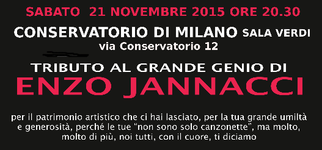

22/11/2015 di Andrea Pedrinelli su ilSussidiario.net
Articolo originale
GRAZIE MAESTRO!/ Jannacci,  lo spettacolo tributo al Dottore che ha saputo scuotere Milano una faccenda che il Dottore avrebbe apprezzato molto.
“Grazie Maestro!!”, che trae il titolo da una bella e toccante canzone omaggio dell’allievo Osvaldo Ardenghi per il suo (e non solo suo) insegnante di cabaret e soprattutto di vita, si terrà alla Sala Verdi del Conservatorio di Milano, luogo jannacciano come pochi giacché al Conservatorio meneghino l’enfant prodige del pianoforte Vincenzo Jannacci (fu Lo spettacolo di questa sera, la locandina un talento pazzesco del jazz, agli esordi) ha effettivamente studiato, dividendo le proprie giornate in quel luogo con il contemporaneo percorso universitario in Medicina.
E come sempre, l’appassionato lavoro di Silvia Reggiani e dei suoi amici ha partorito, per uno spettacolo che di Jannacci testimonia l’arte musicale, la genialità comica e anche la lezione etica, un parterre di protagonisti che raramente si riesce a radunare in un’unica soluzione.
Ma per Jannacci, evidentemente rimasto dentro mente e cuore di moltissimi, accade spesso che protagonisti del jazz, della canzone d’autore, della comicità, intersechino i propri percorsi a volte anche anagraficamente molto distanti al fine di tenerne vive memoria ed eredità.
E al di là del valore in sé del ricordare una persona e un artista del calibro del Dottore, nonché oltre lo scopo benefico dell’evento che è comunque da sottolineare ancora con forza (l’ingresso è a contributo minimo di 10 euro, info al numero 340.9472554), va rimarcato come la prima milanese di “Grazie Maestro!!” allinei sul palco soprattutto testimoni, artisti cioè che con Jannacci hanno diviso momenti fondamentali ed esperienze decisive: faccenda che aumenta, della serata, portata emotiva e capacità di trasmettere davvero, a tutto tondo, l’eredità di Jannacci.
I nomi in cartellone sono venti, e chi legge ben capirà come le esigenze giornalistiche impediranno, ahinoi, di parlare di tutti in modo approfondito.
Però intanto tutti li citiamo, com’è doveroso fare. La band che ridarà vita al corpus jannacciano è composta da Marco Brioschi (tromba e flicorno), Sergio Farina (chitarra), Paolo Brioschi (pianoforte), Piero Orsini (contrabbasso e basso), Flaviano Cuffari (batteria e percussioni), Paolo Tomelleri (clarinetto), Carlo Pastori (fisarmonica).
Voci dell’eredità del Maestro saranno Carlo Fava, Andrea Achilli, Claudio Sanfilippo, Elena Paoletti, Folco Orselli, Stefano Usini, Michaela Negri.
Protagonisti in più modi, anche perché espliciti allievi jannacciani dal Bolgia Umana (il suo locale fondato negli anni Novanta) in poi, saranno Osvaldo Ardenghi e il duo Bove & Limardi. E special guest Davide Zilli, Nando de Luca ed Enrico Intra. Proprio da Enrico Intra partiamo, anche perché la portata di Intra nella storia della musica italiana (jazz e non solo) è notevolissima: Intra è jazzista di vaglia, sperimentatore inesausto, educatore rigoroso,
autore di dischi decisivi per la musica italiana contemporanea e soprattutto – almeno, soprattutto in questo caso – operatore culturale di prim’ordine. Fu da operatore culturale, che Intra creò il celebre Intra’s Derby Club negli anni Sessanta: e fu lì che Jannacci iniziò a esibirsi, testandovi come lo stesso Intra ci ha raccontato anche futuri capolavori degli esordi,
creandosi un linguaggio che poi con “Milanin Milanon” e i dischi da “El portava i scarp del tennis” in giù, sarebbe divenuto indimenticabile quanto inimitabile. Soprattutto, anche oltre Jannacci stesso, grazie a Intra e al “suo” Derby nacque quello che oggi chiamiamo cabaret.
E che dunque al Conservatorio verrà testimoniato in più forme, da quelle che prese nell’arte del Dottore a come potrà ricordarne la nascita colui che la provocò cercando di scuotere una Milano all’epoca ancora distratta a certe novità culturali, il jazz e non soltanto.